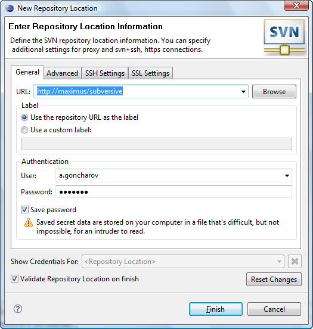
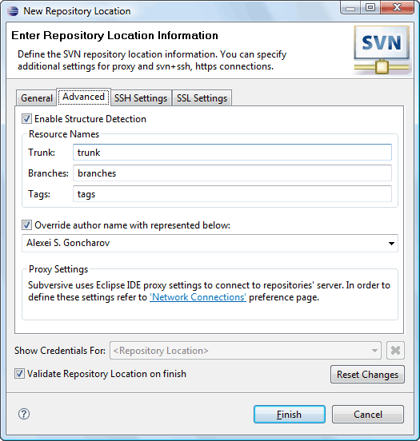
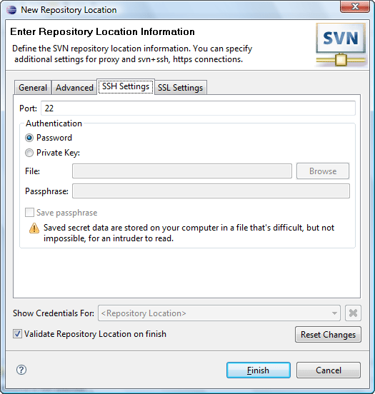
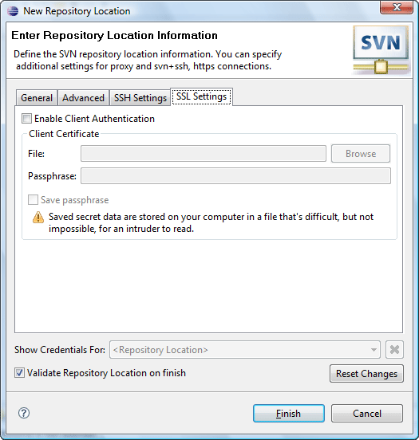

|
|
|
 'SVN Repository Location Wizard' provides a probability to add a new repository location link to your workspace. Accessible from 'SVN Repository View' (click on 'New Repository Location' button), 'File>New' menu in the 'Repository Exploring Perspective' and from 'New>Other' menu in every other perspective. User should specify all necessary options and click 'Finish' to accept an action or 'Cancel' to discard it.
'SVN Repository Location Wizard' provides a probability to add a new repository location link to your workspace. Accessible from 'SVN Repository View' (click on 'New Repository Location' button), 'File>New' menu in the 'Repository Exploring Perspective' and from 'New>Other' menu in every other perspective. User should specify all necessary options and click 'Finish' to accept an action or 'Cancel' to discard it.
| Option | Description | Default |
| Validate repository location on finish | Specifies if the plug-in should check a repository location, offered by user, for existence. | Enabled |
| Show credentials for: | Specifies repository location authentication realm credentials. | - |
General
| Option | Description | Default |
| URL | Specifies an URL for a new repository location. | 'blank' |
| Label | Specifies which label will be used in the workspace for the repository. To use custom label choose 'Use custom label' and input the wished name into editable space. | 'Use repository URL as the label' |
| User | Input user name (login) here. | 'blank' |
| Password | Input password here. | 'blank' |
| Save password | Enables/disables saving login/password information in a file on a local machine. | Disabled |
This is how 'General' tab group looks like:
Advanced
| Option | Description | Default |
| Enable Structure Detection | Specifies if the Subversion® should detect the structure of repository. | Enabled |
| Trunk | Specifies trunk name to use for structure detection. | trunk |
| Branches | Specifies branches name to use for structure detection. | branches |
| Tags | Specifies tags name to use for structure detection. | tags |
| Override author name with represented below | Specifies if the author name should be overridden for repository affecting operations. | Disabled |
|
Note: |
Please pay special attention that pre-revprop-change hook should be implemented for the repository and should allow to change "svn:author" revision property. |
This is how 'Advanced' tab group looks like:
SSH Settings
Specifies SSH setting for a repository.
| Option | Description | Default |
| Port | Specifies port number for SSH. | 20 |
| Authentication | Selecting of an authentication method: 'Password' or 'Private Key'. For 'Private Key' authentication input file path and password phrase. There is also an option of password phrase saving feature enablement. | 'Password' |
This is how 'SSH Settings' tab group looks like:
SSL Settings
Specifies SSL setting for a repository.
| Option | Description | Default |
| Enable Client Authentication | Specifies if the SSL client authentication is needed. | Disabled |
This is how 'SSL Settings' tab group looks like:
